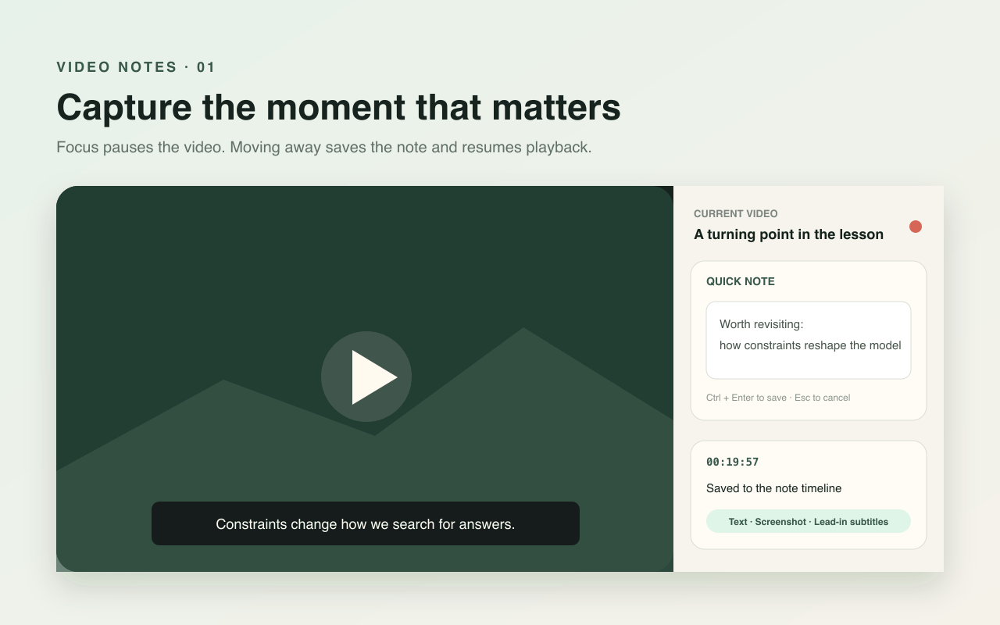

Install it in Edge / Chrome
Download the preview ZIP and load its extracted folder from the extensions page.
Microsoft Edge / Chrome · Notes for video lessons
Watching and taking useful notes pull your attention in different directions. Video Notes keeps your thoughts, timestamps, screenshots, lead-in subtitles, and voice beside the video, so the context stays with every idea.

How it works
The side panel stays next to the lesson. Capture the moment, keep watching, and organize everything when you finish.
Download the preview ZIP and load its extracted folder from the extensions page.
Start a YouTube or Bilibili lesson, then select Video Notes in the Edge toolbar.
The video pauses while you type and resumes after saving. Add subtitles, a screenshot, or voice when useful.
Export a Markdown ZIP and continue working in the notes app you already use.
Benefits
Playback pauses while you type and resumes after saving. Capture the idea in place without losing your viewing rhythm.
Each note can carry its timestamp, sentence-aware recent subtitles, a player screenshot, and voice, making the original moment easy to recover.
Export Markdown, images, and original recordings for apps such as Obsidian. Your content and transcription stay in the browser.
Supports standard YouTube videos and Bilibili BV videos, including multi-part lessons. Subtitles come from text already shown in the player.